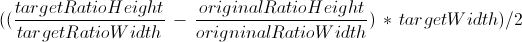

The purpose of this article is to help you create a flexible HTML + CSS code to handle different thumbnail ratios in your web application.
The first thing to do is to create a new DOM element container to hold the thumbnail code:
Now we can add the element that will act as the image cropper:
Let's finish the markup stage by adding the actual thumbnail image in 4/3 ratio format.
Not quite bad! However, we might prefer to display our thumbnails as 16/9 ratio. Let's move on to stylesheets to discover how we can achieve this.
This is where the magic happens. Start by setting the
dimensions of the clipping element at the choose ratio,
16/9 in this example. Then set the inner img
tag width and let it's height adapt by not assigning a
value to it.
We applied a display: block; to the
clipping element so his inner img tag
could benefit of relative dimensions.
From now on, the inner img tag will
adapt any resizing of the clipping element .thumbnail-clip.
But still we are displaying a 4/3 ratio thumbnail.
To finish the clever video thumbnails we must hide
any overflow and calculate the clipping needed by
you ratio delta.
In this example we are displaying 4/3 data in a
16/9 view so the formula is :

The formula implementation becomes: (((90 / 160) x 96) - (90 / 120) x 96)/2 =
96 / ((16 / 4) * (4/3) * 2) = 9pxLet's apply this clipping aswell as the overflow hidding to our elements.